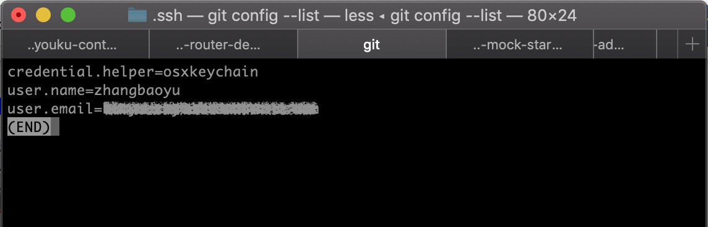
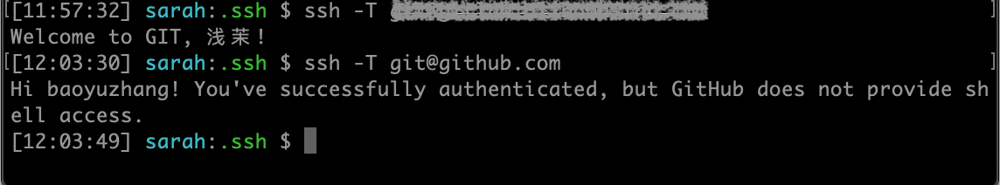

工作环境使用gitlab账号，个人学习或参与开源项目需要使用github账号。默认情况下，一台电脑的Git只对应一个账户。本文教你在一个Git终端中配置多个账户，同时管理多个托管网站的代码。
参考资料
https://www.jianshu.com/p/698f82e72415
https://segmentfault.com/a/1190000016269686
1. 查看已配置的git列表
1 | git config --list |
已有公司的ssh-key

2. 生成github SSH key
1 | ssh-keygen -t rsa -f ~/.ssh/id_rsa_github -C "baoyuzhang@126.com" |

3. 添加到ssh-agent信任列表
1 | ssh-add ~/.ssh/id_rsa |
1 | ssh-add ~/.ssh/id_rsa_github |

为了检验本地是否添加成功，可以使用ssh-add -l命令进行查看
4. 添加公钥到你的github
1 | pbcopy < ~/.ssh/id_rsa_github.pub |
5. 在config文件配置多个ssh-key
打开目录，看看有没有config文件，没有的话新建一个
1 | open ~/.ssh/ |
分别配置公司和自己的ssh-key
| 键 | 值 | 规则 |
|---|---|---|
| Host | 主机 | 随意写，有点关联就行了 |
| Hostname | 主机名 | 公司gitlab域名，必须写正确 |
| IdentityFile | 身份文件 | rsa具体路径地址 |
| User | 用户 | 可随意写，建议使用Host的前面部分，后面具体clone操作都会用到这个user |
1 | #公司 |
6. 连接测试
1 | ssh -T #公司gitlab域名# |
1 | ssh -T git@github.com |
